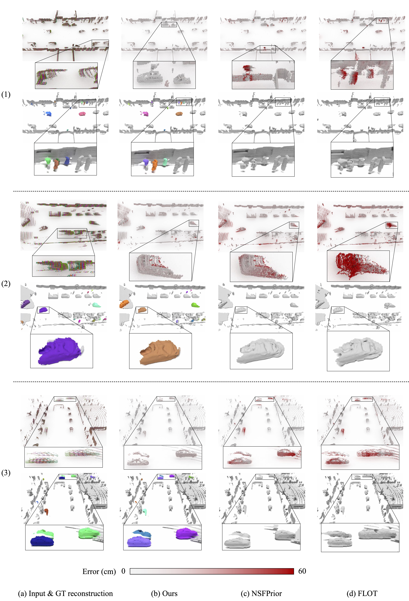

Our method takes in a point cloud sequence of T frames and starts by extracting foreground points (marked yellow) for each frame. To obtain ego motion, T - 1 pairwise registrations are performed. Next, points belonging to dynamic foreground object are extracted using our motion segmentation module (marked orange). To boost subsequent spatio-temporal instance association, we additionally predict per-point offset vectors. After instance association, we finally compute the rigid motion separately for each segmented dynamic object.
Abstract
Multi-beam LiDAR sensors, as used on autonomous vehicles and mobile robots, acquire sequences of 3D range scans ("frames"). Each frame covers the scene sparsely, due to limited angular scanning resolution and occlusion. The sparsity restricts the performance of downstream processes like semantic segmentation or surface reconstruction. Luckily, when the sensor moves, frames are captured from a sequence of different viewpoints. This provides complementary information and, when accumulated in a common scene coordinate frame, yields a denser sampling and a more complete coverage of the underlying 3D scene. However, often the scanned scenes contain moving objects. Points on those objects are not correctly aligned by just undoing the scanner's ego-motion. In the present paper, we explore multi-frame point cloud accumulation as a mid-level representation of 3D scan sequences, and develop a method that exploits inductive biases of outdoor street scenes, including their geometric layout and object-level rigidity. Compared to state-of-the-art scene flow estimators, our proposed approach aims to align all 3D points in a common reference frame correctly accumulating the points on the individual objects. Our approach greatly reduces the alignment errors on several benchmark datasets. Moreover, the accumulated point clouds benefit high-level tasks like surface reconstruction.
Qualitative results
We show qualitative examples of scene and object reconstruction with our approach. By jointly estimating the ego-motion of the static part and the moving object motions, our method accumulates the corresponding points into a common, motion-compensated frame. It thus provides an excellent basis for 3D surface reconstruction.
Qualitative results on Waymo

Qualitative results on nuScenes
Citation
@inproceedings{huang2022accumulation,
title={Dynamic 3D Scene Analysis by Point Cloud Accumulation},
author={Shengyu Huang and Zan Gojcic and Jiahui Huang and Andreas Wieser, Konrad Schindler},
booktitle={European Conference on Computer Vision, ECCV},
year={2022}
}